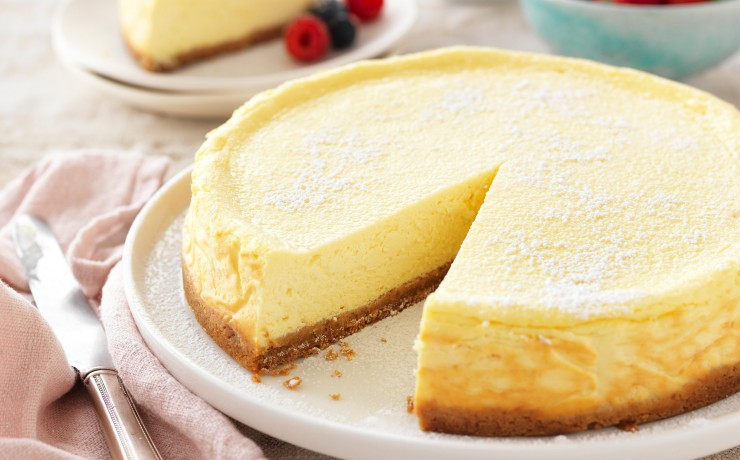

Cheesecake

Easy Bake Cheesecake
Easy bake cheesecake that can be done in 30 minutes.
This recipe is quick and easy. It only requires a few ingridients!
Ingridients
- Cream cheese
- Condensed milk
- Sweetner of choice
- Milk
- Butter
- Graham Cookies
Steps to make cheesecake
- Mix all wet ingridients
- Crush graham crackers and mix with butter
- Bake graham cracker crust before poruing in mixture
- Once graham crust is baked, pour cheesecake mix in
- Bake for 30 minutes
- Once baked let cool in fridge for 2-4 hours and serve